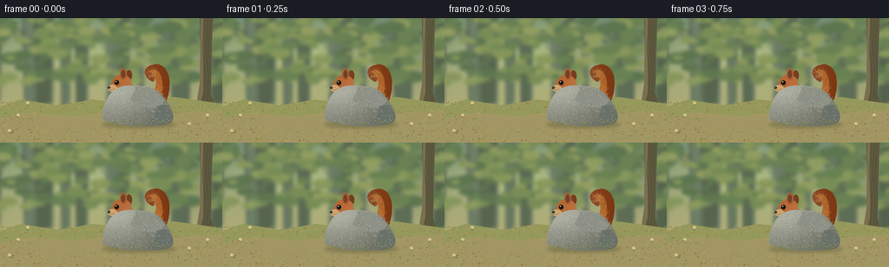
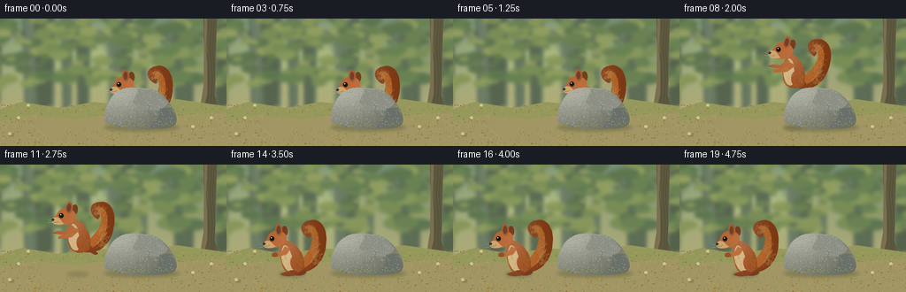

CODING AGENTS AS PIXEL WORLD MODELS
traex/GPT-6.1-Sol · dynamic_spatial_relationship_0023
点击播放 · 原生 RGB 像素
逐轮保存的候选
回放视频、检查图与代码变化。
每份候选均可单独播放。实际图片检查记录在下方工具轨迹中。
候选 01播放与检查图
点击播放 · 原生 RGB 像素


展开代码变化
--- 上一保存版本
+++ 本次保存版本
@@ -0,0 +1,222 @@
+from pathlib import Path
+import math
+import numpy as np
+from PIL import Image, ImageDraw, ImageFilter
+import artifact_io
+
+ROOT = Path(__file__).resolve().parent
+W,H,S = 256,144,4
+rng = np.random.default_rng(29)
+
+def poly(draw, pts, fill):
+ draw.polygon([(int(x*S),int(y*S)) for x,y in pts], fill=fill)
+def ellipse(draw, box, fill, outline=None, width=1):
+ draw.ellipse(tuple(int(v*S) for v in box), fill=fill, outline=outline, width=max(1,int(width*S)))
+def line(draw, pts, fill, width=1):
+ draw.line([(int(x*S),int(y*S)) for x,y in pts],fill=fill,width=max(1,int(width*S)))
+
+def bezier(points, steps=24):
+ out=[]
+ for seg in points:
+ a,b,c,d=np.array(seg,float)
+ for t in np.linspace(0,1,steps):
+ out.append(tuple((1-t)**3*a+3*(1-t)**2*t*b+3*(1-t)*t*t*c+t**3*d))
+ return out
+
+# Softly lit, layered woodland, with a clear foreground stage.
+y,x=np.mgrid[0:H*S,0:W*S]/S
+arr=np.empty((H*S,W*S,3),float)
+for k,(top,bot) in enumerate(zip((112,137,115),(198,184,120))):
+ arr[:,:,k]=top+(bot-top)*(y/H)
+light=np.exp(-((x-84)**2/7000+(y-39)**2/1700))
+arr+=light[:,:,None]*np.array([39,37,15])
+bg=Image.fromarray(np.uint8(np.clip(arr,0,255))).convert('RGB')
+d=ImageDraw.Draw(bg)
+for i in range(21):
+ xx=rng.uniform(-20,277); wide=rng.uniform(3,12); depth=rng.uniform(0,1)
+ col=tuple(int(v) for v in (112-28*depth,129-31*depth,105-30*depth))
+ poly(d,[(xx-wide,0),(xx+wide,0),(xx+wide*.7,98),(xx-wide*.7,105)],col)
+ line(d,[(xx,44),(xx-15,21),(xx-31,14)],col,wide*.35)
+for i in range(240):
+ xx=rng.uniform(-10,268); yy=rng.uniform(-12,75); rr=rng.uniform(2,14)
+ c=rng.choice([(105,129,83),(120,141,86),(135,151,91),(145,157,96),(94,118,80)])
+ ellipse(d,(xx-rr,yy-rr*.5,xx+rr,yy+rr*.5),tuple(c))
+bg=bg.filter(ImageFilter.GaussianBlur(2.1*S))
+d=ImageDraw.Draw(bg)
+# Tree framing on the right, kept away from the action.
+poly(d,[(230,0),(245,0),(242,86),(250,108),(227,108),(231,65)],(93,88,62))
+poly(d,[(231,0),(234,0),(234,86),(229,104),(225,107),(230,76)],(122,111,78))
+for xx in [235,239,242]:
+ line(d,[(xx,2),(xx-2,35),(xx+1,68),(xx-1,98)],(74,75,54),.6)
+poly(d,[(0,102),(24,94),(68,101),(106,94),(153,99),(200,91),(256,99),(256,144),(0,144)],(150,153,92))
+poly(d,[(0,116),(36,109),(85,114),(132,107),(190,111),(256,106),(256,144),(0,144)],(162,151,100))
+# Fine grass, fallen leaves, and tiny woodland flowers.
+for i in range(1100):
+ xx=rng.uniform(0,W); yy=rng.uniform(97,145)
+ if 46<xx<207 and 111<yy<127: continue
+ if rng.random()<.68:
+ col=rng.choice([(130,139,76),(123,132,73),(177,169,108),(110,124,67)])
+ line(d,[(xx,yy),(xx+rng.uniform(-2,2),yy-rng.uniform(1,4))],tuple(col),.3)
+ else:
+ col=rng.choice([(136,108,60),(190,156,85),(162,127,64)])
+ ellipse(d,(xx,yy,xx+rng.uniform(.7,2.4),yy+.65),tuple(col))
+for xx,yy in [(21,113),(218,123),(32,99),(239,113),(11,131)]:
+ line(d,[(xx,yy+3),(xx,yy-1)],(88,118,63),.5)
+ for a in range(5):
+ cx=xx+math.cos(a*math.tau/5)*1.2;cy=yy-1+math.sin(a*math.tau/5)*1.2
+ ellipse(d,(cx-.6,cy-.5,cx+.6,cy+.5),(227,214,159))
+ ellipse(d,(xx-.35,yy-1.35,xx+.35,yy-.65),(210,169,62))
+
+# The rock is a textured, rounded granite boulder, independently composited
+# in front of the animal at the beginning to make the spatial relation explicit.
+rock=Image.new('RGBA',(W*S,H*S))
+mask=Image.new('L',rock.size);md=ImageDraw.Draw(mask)
+rockpts=bezier([[(119,118),(115,111),(122,88),(134,82)],[(134,82),(141,76),(157,78),(165,79)],[(165,79),(178,79),(188,88),(195,101)],[(195,101),(200,109),(203,119),(193,123)],[(193,123),(169,127),(135,125),(119,118)]])
+poly(md,rockpts,255)
+noise=np.random.default_rng(14).normal(0,1,(H*S,W*S))
+grain=Image.fromarray(np.uint8(np.clip(noise*27+127,0,255))).filter(ImageFilter.GaussianBlur(.25*S))
+n=np.asarray(grain).astype(float)-127
+shade=22*np.exp(-((x-140)**2/900+(y-88)**2/400))-0.63*(y-91)-0.35*(x-147)
+ra=np.stack([144+shade+n*.39,146+shade+n*.37,133+shade+n*.34],axis=2)
+rock=Image.fromarray(np.uint8(np.clip(ra,0,255))).convert('RGBA');rock.putalpha(mask)
+rd=ImageDraw.Draw(rock)
+# Faceted subtle shading, veining, and moss at the base.
+poly(rd,[(157,79),(177,83),(190,95),(182,104),(161,103),(150,94)],(142,145,134,100))
+poly(rd,[(181,101),(193,101),(200,116),(190,121),(169,123),(178,113)],(105,113,105,120))
+line(rd,[(130,89),(143,84),(151,86)],(190,189,167,170),.55)
+line(rd,[(163,92),(169,99),(167,105),(176,111)],(103,113,103,105),.5)
+line(rd,[(164,92),(169,98)],(190,185,165,95),.5)
+for i in range(630):
+ xx=rng.uniform(119,199); yy=rng.uniform(79,123)
+ if mask.getpixel((int(xx*S),int(yy*S)))==0:continue
+ rr=rng.uniform(.08,.42)
+ col=rng.choice([(192,191,170,120),(102,111,101,120),(211,205,181,110)])
+ ellipse(rd,(xx,yy,xx+rr,yy+rr),tuple(col))
+for i in range(95):
+ xx=rng.uniform(120,199);yy=120+2*np.sin(xx*.2)+rng.normal(0,1.1)
+ if mask.getpixel((int(xx*S),int(yy*S)))>0:
+ ellipse(rd,(xx,yy,xx+rng.uniform(.3,1.6),yy+rng.uniform(.2,.9)),tuple(rng.choice([(91,113,61,220),(119,136,71,200),(143,148,83,180)])))
+# Preserve shape alpha after added detail.
+rock.putalpha(mask)
+
+# Squirrel rendered in its own coordinate frame. Large curled tail, round ears,
+# dark bright eye, pale belly, little gripping paws, and individual fur strokes.
+CW,CH=100,96
+OX,OY=39,70
+LX,LY=np.meshgrid(np.arange(CW*S)/S-OX,np.arange(CH*S)/S-OY)
+fur_noise=np.random.default_rng(123).normal(0,1,(CH*S,CW*S))
+
+def squirrel(pose, t):
+ im=Image.new('RGBA',(CW*S,CH*S));dr=ImageDraw.Draw(im)
+ def pts(q):return [(a+OX,b+OY) for a,b in q]
+ def el(box,c): ellipse(dr,(box[0]+OX,box[1]+OY,box[2]+OX,box[3]+OY),c)
+ def ln(q,c,w=.5):line(dr,pts(q),c,w)
+ def shape(q,col,highlight=20):
+ m=Image.new('L',im.size); dm=ImageDraw.Draw(m);poly(dm,pts(q),255)
+ shading=highlight*np.exp(-((LX+6)**2/420+(LY+27)**2/900)) - .25*(LX+3)+fur_noise*3
+ a=np.stack([np.clip(c+shading,0,255) for c in col],axis=2).astype('uint8')
+ layer=Image.fromarray(a).convert('RGBA');layer.putalpha(m);im.alpha_composite(layer)
+ # tail, plume pointing up with its tip curling toward the back
+ sway=math.sin(t*2.1)*1.1
+ tail=bezier([[(8,7),(24,9),(37,-5),(38,-24)],[(38,-24),(40,-44),(30,-55),(18,-51)],[(18,-51),(7,-48),(8,-38),(16,-33)],[(16,-33),(21,-29),(22,-35),(20,-39)],[(20,-39),(29,-38),(29,-26),(24,-17)],[(24,-17),(18,-10),(12,-8),(7,-3)],[(7,-3),(3,1),(4,5),(8,7)]])
+ tail=[(a+sway*(max(0,-b)/50),b) for a,b in tail]
+ shape(tail,(133,66,29),32)
+ inner=bezier([[(12,3),(30,-3),(34,-28),(27,-41)],[(27,-41),(23,-47),(16,-46),(15,-43)],[(15,-43),(29,-35),(21,-19),(16,-13)],[(16,-13),(10,-5),(9,1),(12,3)]])
+ shape(inner,(179,101,44),17)
+ # Soft guard hairs follow the tail sweep, anchored in local coordinates.
+ fr=np.random.default_rng(88)
+ for j in range(270):
+ yy=fr.uniform(-46,2); center=25+6*math.sin((yy+15)/18)
+ xx=center+fr.normal(0,4)
+ # retain only inside existing tail alpha
+ px=int((xx+OX)*S);py=int((yy+OY)*S)
+ if 0<=px<CW*S and 0<=py<CH*S and im.getpixel((px,py))[3]:
+ ln([(xx,yy),(xx+fr.uniform(.5,2),yy-fr.uniform(1,3))],(205,133,69,160),.22)
+ # far rear foot / airborne stretched back leg
+ if pose=='flight':
+ shape(bezier([[(6,-5),(15,-4),(16,3),(23,6)],[(23,6),(25,8),(21,10),(16,7)],[(16,7),(6,4),(1,-2),(6,-5)]]),(135,67,31),10)
+ else:
+ el((-3,3,16,11),(116,62,34))
+ # pear shaped torso, large thigh
+ body=bezier([[(-8,-29),(-17,-22),(-14,-7),(-9,4)],[ [ -9,4],[-5,11],[9,10],[13,3]],[[13,3],[17,-11],[5,-27],[-8,-29]]])
+ shape(body,(149,76,32),28)
+ belly=bezier([[(-9,-23),(-16,-13),(-10,3),(-4,6)],[[-4,6],[4,9],[3,-3],[-1,-13]],[[-1,-13],[-3,-20],[-5,-23],[-9,-23]]])
+ shape(belly,(207,177,127),9)
+ thigh=bezier([[(5,-11),(-1,-13),(-4,-4),(0,3)],[[0,3],[6,9],[15,6],[14,0]],[[14,0],[13,-7],[10,-10],[5,-11]]])
+ shape(thigh,(157,79,33),18)
+ if pose!='flight':
+ shape(bezier([[(-1,5),(-9,8),(-12,8),(-13,10)],[[-13,10],[-9,13],[5,12],[8,9]],[[8,9],[6,6],[2,5],[-1,5]]]),(132,66,31),12)
+ for a in [-9,-6,-3]:ln([(a,10),(a-1,11)],(81,47,31),.35)
+ # two forelegs: tucked while seated, reaching forward during leap
+ if pose=='flight':
+ arm=[(-10,-22),(-17,-14),(-26,-13),(-29,-10),(-24,-9),(-13,-10),(-5,-18)]
+ shape(arm,(163,90,43),16)
+ ln([(-26,-10),(-30,-10)],(96,54,28),.65)
+ shape([(-6,-19),(-14,-11),(-23,-7),(-23,-4),(-18,-5),(-8,-8),(0,-17)],(171,95,44),15)
+ else:
+ shape([(-8,-22),(-12,-16),(-20,-14),(-21,-10),(-16,-10),(-6,-13),(-2,-19)],(172,96,44),18)
+ el((-23,-15,-16,-10),(150,82,40))
+ ln([(-23,-11),(-18,-11)],(94,55,32),.4)
+ # rear ear, head and nearer ear: short and oval, not fox-like.
+ el((-12,-45,-5,-33),(117,61,32))
+ head=bezier([[(-9,-37),(-16,-43),(-26,-39),(-28,-31)],[ [ -28,-31],[-29,-28],[-34,-25],[-31,-22]],[[ -31,-22],[-25,-18],[-14,-20],[-9,-25]], [[-9,-25],[-5,-29],[-5,-34],[-9,-37]]])
+ shape(head,(165,88,38),22)
+ shape(bezier([[(-29,-28),(-23,-29),(-22,-23),(-18,-22)],[[-18,-22],[-25,-18],[-32,-20],[-32,-23]],[[-32,-23],[-34,-25],[-31,-27],[-29,-28]]]),(198,156,102),8)
+ el((-19,-47,-11,-34),(165,92,47))
+ el((-17.5,-44.8,-13,-36),(112,64,41))
+ ln([(-18,-42),(-17.8,-46),(-16,-48)],(174,106,58),.65)
+ el((-25.5,-33.3,-19.9,-27.4),(101,61,32))
+ el((-24.8,-32.9,-20.2,-28.4),(21,20,16))
+ el((-24,-32.1,-22.6,-30.9),(249,240,216))
+ el((-33.2,-25.8,-30,-23.4),(44,32,23))
+ ln([(-31,-21.9),(-27,-22.4),(-25,-23.4)],(87,51,32),.4)
+ for q in [[(-29,-23),(-37,-24)],[(-28,-22),(-37,-21)],[(-27,-23),(-35,-26)]]:ln(q,(227,203,159,190),.2)
+ # sparse fur detailing around cheek and torso
+ fr=np.random.default_rng(61)
+ for j in range(140):
+ xx=fr.uniform(-15,12);yy=fr.uniform(-28,6)
+ if ((xx+1)/13)**2+((yy+10)/22)**2<1:
+ ln([(xx,yy),(xx+.7,yy+1.3)],(194,120,59,100),.2)
+ return im
+
+# Contact shadows use height to make the arc easy to read.
+def shadow(im,cx,cy,rx,ry,opacity):
+ layer=Image.new('RGBA',im.size);d=ImageDraw.Draw(layer)
+ ellipse(d,(cx-rx,cy-ry,cx+rx,cy+ry),(53,58,36,int(opacity)))
+ layer=layer.filter(ImageFilter.GaussianBlur(1.9*S));im.alpha_composite(layer)
+
+frames=[]
+for i in range(20):
+ t=i/4
+ if i<=5:
+ xx=157;yy=105+0.45*math.sin(t*3);angle=0;pose='sit';front=False
+ elif i==6:
+ xx=154;yy=109;angle=-8;pose='sit';front=False
+ elif i<=12:
+ u=(i-6)/6
+ xx=154-79*u
+ yy=105+10*u-45*math.sin(math.pi*u)
+ angle=-14*math.sin(math.pi*u)
+ pose='flight' if i<12 else 'sit';front=False
+ elif i==13:
+ xx=74;yy=118;angle=-5;pose='sit';front=True
+ else:
+ xx=74;yy=114.5+0.25*math.sin(t*3);angle=0;pose='sit';front=True
+ scene=bg.convert('RGBA')
+ shadow(scene,160,123,43,4,70)
+ height=max(0,114-yy)
+ if i>=7:shadow(scene,xx,124,15-height*.11,2.6-height*.012,72-height*.7)
+ animal=squirrel(pose,t)
+ # rotate around local origin, retaining the same spatial anchor
+ if angle:
+ animal=animal.rotate(angle,Image.Resampling.BICUBIC,center=(OX*S,OY*S))
+ location=(int((xx-OX)*S),int((yy-OY)*S))
+ if not front:
+ scene.alpha_composite(animal,location)
+ scene.alpha_composite(rock)
+ else:
+ scene.alpha_composite(rock)
+ scene.alpha_composite(animal,location)
+ frames.append(np.asarray(scene.convert('RGB').resize((W,H),Image.Resampling.LANCZOS)))
+artifact_io.save(np.stack(frames).astype(np.uint8),ROOT)
+print('Saved 20 RGB frames and player artifacts.')
可观测工具轨迹
实际执行的命令与返回图片。
命令 1exit 0
/bin/bash -lc 'ls -la && cat prompt.txt && cat GENERATION_RULES.md && cat task_spec.json'
命令 2exit 0
/bin/bash -lc "cat artifact_io.py && python - <<'PY'
import numpy,PIL
print('PIL and numpy ready')
PY"命令 3exit 0
/bin/bash -lc "cat > generate.py <<'PY'
from pathlib import Path
import math
import numpy as np
from PIL import Image, ImageDraw, ImageFilter
import artifact_io
ROOT = Path(__file__).resolve().parent
W,H,S = 256,144,4
rng = np.random.default_rng(29)
def poly(draw, pts, fill):
draw.polygon([(int(x*S),int(y*S)) for x,y in pts], fill=fill)
def ellipse(draw, box, fill, outline=None, width=1):
draw.ellipse(tuple(int(v*S) for v in box), fill=fill, outline=outline, width=max(1,int(width*S)))
def line(draw, pts, fill, width=1):
draw.line([(int(x*S),int(y*S)) for x,y in pts],fill=fill,width=max(1,int(width*S)))
def bezier(points, steps=24):
out=[]
for seg in points:
a,b,c,d=np.array(seg,float)
for t in np.linspace(0,1,steps):
out.append(tuple((1-t)**3*a+3*(1-t)**2*t*b+3*(1-t)*t*t*c+t**3*d))
return out
# Softly lit, layered woodland, with a clear foreground stage.
y,x=np.mgrid[0:H*S,0:W*S]/S
arr=np.empty((H*S,W*S,3),float)
for k,(top,bot) in enumerate(zip((112,137,115),(198,184,120))):
arr[:,:,k]=top+(bot-top)*(y/H)
light=np.exp(-((x-84)**2/7000+(y-39)**2/1700))
arr+=light[:,:,None]*np.array([39,37,15])
bg=Image.fromarray(np.uint8(np.clip(arr,0,255))).convert('RGB')
d=ImageDraw.Draw(bg)
for i in range(21):
xx=rng.uniform(-20,277); wide=rng.uniform(3,12); depth=rng.uniform(0,1)
col=tuple(int(v) for v in (112-28*depth,129-31*depth,105-30*depth))
poly(d,[(xx-wide,0),(xx+wide,0),(xx+wide*.7,98),(xx-wide*.7,105)],col)
line(d,[(xx,44),(xx-15,21),(xx-31,14)],col,wide*.35)
for i in range(240):
xx=rng.uniform(-10,268); yy=rng.uniform(-12,75); rr=rng.uniform(2,14)
c=rng.choice([(105,129,83),(120,141,86),(135,151,91),(145,157,96),(94,118,80)])
ellipse(d,(xx-rr,yy-rr*.5,xx+rr,yy+rr*.5),tuple(c))
bg=bg.filter(ImageFilter.GaussianBlur(2.1*S))
d=ImageDraw.Draw(bg)
# Tree framing on the right, kept away from the action.
poly(d,[(230,0),(245,0),(242,86),(250,108),(227,108),(231,65)],(93,88,62))
poly(d,[(231,0),(234,0),(234,86),(229,104),(225,107),(230,76)],(122,111,78))
for xx in [235,239,242]:
line(d,[(xx,2),(xx-2,35),(xx+1,68),(xx-1,98)],(74,75,54),.6)
poly(d,[(0,102),(24,94),(68,101),(106,94),(153,99),(200,91),(256,99),(256,144),(0,144)],(150,153,92))
poly(d,[(0,116),(36,109),(85,114),(132,107),(190,111),(256,106),(256,144),(0,144)],(162,151,100))
# Fine grass, fallen leaves, and tiny woodland flowers.
for i in range(1100):
xx=rng.uniform(0,W); yy=rng.uniform(97,145)
if 46<xx<207 and 111<yy<127: continue
if rng.random()<.68:
col=rng.choice([(130,139,76),(123,132,73),(177,169,108),(110,124,67)])
line(d,[(xx,yy),(xx+rng.uniform(-2,2),yy-rng.uniform(1,4))],tuple(col),.3)
else:
col=rng.choice([(136,108,60),(190,156,85),(162,127,64)])
ellipse(d,(xx,yy,xx+rng.uniform(.7,2.4),yy+.65),tuple(col))
for xx,yy in [(21,113),(218,123),(32,99),(239,113),(11,131)]:
line(d,[(xx,yy+3),(xx,yy-1)],(88,118,63),.5)
for a in range(5):
cx=xx+math.cos(a*math.tau/5)*1.2;cy=yy-1+math.sin(a*math.tau/5)*1.2
ellipse(d,(cx-.6,cy-.5,cx+.6,cy+.5),(227,214,159))
ellipse(d,(xx-.35,yy-1.35,xx+.35,yy-.65),(210,169,62))
# The rock is a textured, rounded granite boulder, independently composited
# in front of the animal at the beginning to make the spatial relation explicit.
rock=Image.new('RGBA',(W*S,H*S))
mask=Image.new('L',rock.size);md=ImageDraw.Draw(mask)
rockpts=bezier([[(119,118),(115,111),(122,88),(134,82)],[(134,82),(141,76),(157,78),(165,79)],[(165,79),(178,79),(188,88),(195,101)],[(195,101),(200,109),(203,119),(193,123)],[(193,123),(169,127),(135,125),(119,118)]])
poly(md,rockpts,255)
noise=np.random.default_rng(14).normal(0,1,(H*S,W*S))
grain=Image.fromarray(np.uint8(np.clip(noise*27+127,0,255))).filter(ImageFilter.GaussianBlur(.25*S))
n=np.asarray(grain).astype(float)-127
shade=22*np.exp(-((x-140)**2/900+(y-88)**2/400))-0.63*(y-91)-0.35*(x-147)
ra=np.stack([144+shade+n*.39,146+shade+n*.37,133+shade+n*.34],axis=2)
rock=Image.fromarray(np.uint8(np.clip(ra,0,255))).convert('RGBA');rock.putalpha(mask)
rd=ImageDraw.Draw(rock)
# Faceted subtle shading, veining, and moss at the base.
poly(rd,[(157,79),(177,83),(190,95),(182,104),(161,103),(150,94)],(142,145,134,100))
poly(rd,[(181,101),(193,101),(200,116),(190,121),(169,123),(178,113)],(105,113,105,120))
line(rd,[(130,89),(143,84),(151,86)],(190,189,167,170),.55)
line(rd,[(163,92),(169,99),(167,105),(176,111)],(103,113,103,105),.5)
line(rd,[(164,92),(169,98)],(190,185,165,95),.5)
for i in range(630):
xx=rng.uniform(119,199); yy=rng.uniform(79,123)
if mask.getpixel((int(xx*S),int(yy*S)))==0:continue
rr=rng.uniform(.08,.42)
col=rng.choice([(192,191,170,120),(102,111,101,120),(211,205,181,110)])
ellipse(rd,(xx,yy,xx+rr,yy+rr),tuple(col))
for i in range(95):
xx=rng.uniform(120,199);yy=120+2*np.sin(xx*.2)+rng.normal(0,1.1)
if mask.getpixel((int(xx*S),int(yy*S)))>0:
ellipse(rd,(xx,yy,xx+rng.uniform(.3,1.6),yy+rng.uniform(.2,.9)),tuple(rng.choice([(91,113,61,220),(119,136,71,200),(143,148,83,180)])))
# Preserve shape alpha after added detail.
rock.putalpha(mask)
# Squirrel rendered in its own coordinate frame. Large curled tail, round ears,
# dark bright eye, pale belly, little gripping paws, and individual fur strokes.
CW,CH=100,96
OX,OY=39,70
LX,LY=np.meshgrid(np.arange(CW*S)/S-OX,np.arange(CH*S)/S-OY)
fur_noise=np.random.default_rng(123).normal(0,1,(CH*S,CW*S))
def squirrel(pose, t):
im=Image.new('RGBA',(CW*S,CH*S));dr=ImageDraw.Draw(im)
def pts(q):return [(a+OX,b+OY) for a,b in q]
def el(box,c): ellipse(dr,(box[0]+OX,box[1]+OY,box[2]+OX,box[3]+OY),c)
def ln(q,c,w=.5):line(dr,pts(q),c,w)
def shape(q,col,highlight=20):
m=Image.new('L',im.size); dm=ImageDraw.Draw(m);poly(dm,pts(q),255)
shading=highlight*np.exp(-((LX+6)**2/420+(LY+27)**2/900)) - .25*(LX+3)+fur_noise*3
a=np.stack([np.clip(c+shading,0,255) for c in col],axis=2).astype('uint8')
layer=Image.fromarray(a).convert('RGBA');layer.putalpha(m);im.alpha_composite(layer)
# tail, plume pointing up with its tip curling toward the back
sway=math.sin(t*2.1)*1.1
tail=bezier([[(8,7),(24,9),(37,-5),(38,-24)],[(38,-24),(40,-44),(30,-55),(18,-51)],[(18,-51),(7,-48),(8,-38),(16,-33)],[(16,-33),(21,-29),(22,-35),(20,-39)],[(20,-39),(29,-38),(29,-26),(24,-17)],[(24,-17),(18,-10),(12,-8),(7,-3)],[(7,-3),(3,1),(4,5),(8,7)]])
tail=[(a+sway*(max(0,-b)/50),b) for a,b in tail]
shape(tail,(133,66,29),32)
inner=bezier([[(12,3),(30,-3),(34,-28),(27,-41)],[(27,-41),(23,-47),(16,-46),(15,-43)],[(15,-43),(29,-35),(21,-19),(16,-13)],[(16,-13),(10,-5),(9,1),(12,3)]])
shape(inner,(179,101,44),17)
# Soft guard hairs follow the tail sweep, anchored in local coordinates.
fr=np.random.default_rng(88)
for j in range(270):
yy=fr.uniform(-46,2); center=25+6*math.sin((yy+15)/18)
xx=center+fr.normal(0,4)
# retain only inside existing tail alpha
px=int((xx+OX)*S);py=int((yy+OY)*S)
if 0<=px<CW*S and 0<=py<CH*S and im.getpixel((px,py))[3]:
ln([(xx,yy),(xx+fr.uniform(.5,2),yy-fr.uniform(1,3))],(205,133,69,160),.22)
# far rear foot / airborne stretched back leg
if pose=='flight':
shape(bezier([[(6,-5),(15,-4),(16,3),(23,6)],[(23,6),(25,8),(21,10),(16,7)],[(16,7),(6,4),(1,-2),(6,-5)]]),(135,67,31),10)
else:
el((-3,3,16,11),(116,62,34))
# pear shaped torso, large thigh
body=bezier([[(-8,-29),(-17,-22),(-14,-7),(-9,4)],[ [ -9,4],[-5,11],[9,10],[13,3]],[[13,3],[17,-11],[5,-27],[-8,-29]]])
shape(body,(149,76,32),28)
belly=bezier([[(-9,-23),(-16,-13),(-10,3),(-4,6)],[[-4,6],[4,9],[3,-3],[-1,-13]],[[-1,-13],[-3,-20],[-5,-23],[-9,-23]]])
shape(belly,(207,177,127),9)
thigh=bezier([[(5,-11),(-1,-13),(-4,-4),(0,3)],[[0,3],[6,9],[15,6],[14,0]],[[14,0],[13,-7],[10,-10],[5,-11]]])
shape(thigh,(157,79,33),18)
if pose"'!='"'flight':
shape(bezier([[(-1,5),(-9,8),(-12,8),(-13,10)],[[-13,10],[-9,13],[5,12],[8,9]],[[8,9],[6,6],[2,5],[-1,5]]]),(132,66,31),12)
for a in [-9,-6,-3]:ln([(a,10),(a-1,11)],(81,47,31),.35)
# two forelegs: tucked while seated, reaching forward during leap
if pose=='flight':
arm=[(-10,-22),(-17,-14),(-26,-13),(-29,-10),(-24,-9),(-13,-10),(-5,-18)]
shape(arm,(163,90,43),16)
ln([(-26,-10),(-30,-10)],(96,54,28),.65)
shape([(-6,-19),(-14,-11),(-23,-7),(-23,-4),(-18,-5),(-8,-8),(0,-17)],(171,95,44),15)
else:
shape([(-8,-22),(-12,-16),(-20,-14),(-21,-10),(-16,-10),(-6,-13),(-2,-19)],(172,96,44),18)
el((-23,-15,-16,-10),(150,82,40))
ln([(-23,-11),(-18,-11)],(94,55,32),.4)
# rear ear, head and nearer ear: short and oval, not fox-like.
el((-12,-45,-5,-33),(117,61,32))
head=bezier([[(-9,-37),(-16,-43),(-26,-39),(-28,-31)],[ [ -28,-31],[-29,-28],[-34,-25],[-31,-22]],[[ -31,-22],[-25,-18],[-14,-20],[-9,-25]], [[-9,-25],[-5,-29],[-5,-34],[-9,-37]]])
shape(head,(165,88,38),22)
shape(bezier([[(-29,-28),(-23,-29),(-22,-23),(-18,-22)],[[-18,-22],[-25,-18],[-32,-20],[-32,-23]],[[-32,-23],[-34,-25],[-31,-27],[-29,-28]]]),(198,156,102),8)
el((-19,-47,-11,-34),(165,92,47))
el((-17.5,-44.8,-13,-36),(112,64,41))
ln([(-18,-42),(-17.8,-46),(-16,-48)],(174,106,58),.65)
el((-25.5,-33.3,-19.9,-27.4),(101,61,32))
el((-24.8,-32.9,-20.2,-28.4),(21,20,16))
el((-24,-32.1,-22.6,-30.9),(249,240,216))
el((-33.2,-25.8,-30,-23.4),(44,32,23))
ln([(-31,-21.9),(-27,-22.4),(-25,-23.4)],(87,51,32),.4)
for q in [[(-29,-23),(-37,-24)],[(-28,-22),(-37,-21)],[(-27,-23),(-35,-26)]]:ln(q,(227,203,159,190),.2)
# sparse fur detailing around cheek and torso
fr=np.random.default_rng(61)
for j in range(140):
xx=fr.uniform(-15,12);yy=fr.uniform(-28,6)
if ((xx+1)/13)**2+((yy+10)/22)**2<1:
ln([(xx,yy),(xx+.7,yy+1.3)],(194,120,59,100),.2)
return im
# Contact shadows use height to make the arc easy to read.
def shadow(im,cx,cy,rx,ry,opacity):
layer=Image.new('RGBA',im.size);d=ImageDraw.Draw(layer)
ellipse(d,(cx-rx,cy-ry,cx+rx,cy+ry),(53,58,36,int(opacity)))
layer=layer.filter(ImageFilter.GaussianBlur(1.9*S));im.alpha_composite(layer)
frames=[]
for i in range(20):
t=i/4
if i<=5:
xx=157;yy=105+0.45*math.sin(t*3);angle=0;pose='sit';front=False
elif i==6:
xx=154;yy=109;angle=-8;pose='sit';front=False
elif i<=12:
u=(i-6)/6
xx=154-79*u
yy=105+10*u-45*math.sin(math.pi*u)
angle=-14*math.sin(math.pi*u)
pose='flight' if i<12 else 'sit';front=False
elif i==13:
xx=74;yy=118;angle=-5;pose='sit';front=True
else:
xx=74;yy=114.5+0.25*math.sin(t*3);angle=0;pose='sit';front=True
scene=bg.convert('RGBA')
shadow(scene,160,123,43,4,70)
height=max(0,114-yy)
if i>=7:shadow(scene,xx,124,15-height*.11,2.6-height*.012,72-height*.7)
animal=squirrel(pose,t)
# rotate around local origin, retaining the same spatial anchor
if angle:
animal=animal.rotate(angle,Image.Resampling.BICUBIC,center=(OX*S,OY*S))
location=(int((xx-OX)*S),int((yy-OY)*S))
if not front:
scene.alpha_composite(animal,location)
scene.alpha_composite(rock)
else:
scene.alpha_composite(rock)
scene.alpha_composite(animal,location)
frames.append(np.asarray(scene.convert('RGB').resize((W,H),Image.Resampling.LANCZOS)))
artifact_io.save(np.stack(frames).astype(np.uint8),ROOT)
print('Saved 20 RGB frames and player artifacts.')
PY
python generate.py"命令 4exit 0
/bin/bash -lc 'command -v ffmpeg || true; ls -lh pixels.npz index.html inspection.png'
视觉工具实际返回图片 1

保存候选 1 份；完成命令 4 次；可验证图片返回 1 张。原始 API 响应与完整日志保留在本地。